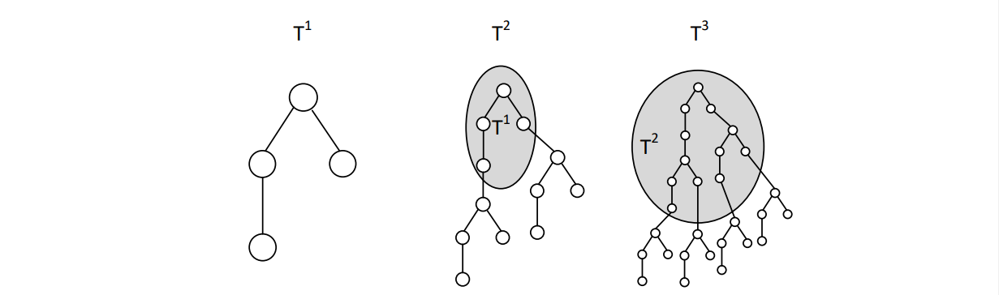

已知一棵包含 $n$ 个元素的有根树 $T = T^1$，其中根为 $1$ 号节点。定义 $T^m$ 为一棵树，生成方式是在 $T^{m-1}$ 的每个叶节点下面连一棵 $T$ 而得。
试求 $T^m$ 的直径的长度 (这里的长度指的是直径上的点数)。
第一行包含两个正整数 $n, m$ ($3 \leq n \leq 2 \times 10^5; 1 \leq m \leq 2 \times 10^5$)，表示 $T$ 的点数和迭代次数。
第二行包含 $n - 1$ 个正整数 $p_2, p_3, \cdots, p_n$ ($1 \leq p_i \leq i - 1$)，表示节点 $p_i$ 与节点 $i$ 之间有边相连。
输出一行一个整数，表示 $T^m$ 的直径长度。
考虑 $T$ 的直径，设它是从 $u$ 到 $v$ 的。显然 $u, v$ 均为叶节点。
由于 $T^m$ 是 $T^{m-1}$ 在叶子下面挂一棵树得到的，因此 $T^m$ 的直径一定是将 $T^{m-1}$ 的直径的两个端点分别在对应的 $T$ 中向下走最深的路径得到的，故长度等于 "$T$ 的最深路径长度" + "$T^{m-1}$ 的直径" + "$T$ 的最深路径长度"。
于是，$\displaystyle \mathop{\mathrm{diam}} \left( T^m \right) = \mathop{\mathrm{diam}} \left( T \right) + 2 \left( m - 1 \right) \left( 1 + \max_{v \in T} \mathop{\mathrm{dist}} \left( 1, v \right) \right)$。
简单 DP 一下即可，时间复杂度 $O \left( n \right)$。
#include <bits/stdc++.h>
#define N 200054
int n, m, D;
int p[N], fc[N], nc[N], f[N];
void up(int &x, const int y) {x < y ? x = y : 0;}
void link(int x, int px) {nc[x] = fc[px], fc[px] = x;}
void dfs(int x) {for (int y = fc[x]; y; y = nc[y]) dfs(y), up(D, f[x] + f[y] + 1), up(f[x], f[y] + 1);}
int main() {
scanf("%d%d", &n, &m);
for (int i = 2; i <= n; ++i) scanf("%d", p + i), link(i, p[i]);
dfs(1), printf("%lld\n", -~D + 2ll * ~-m * -~f[1]);
return 0;
}
无